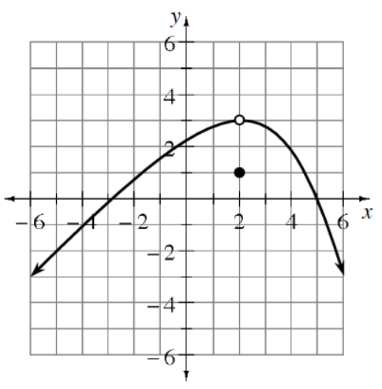

On graph paper, sketch the parabola that is the set of all points equidistant from the focus \((0,7)\) and the directrix \(y=-3\).
Use the definition to write and simplify the equation of the parabola.
Change the equation of this parabola to shift the graph \(5\) units to the right.
Decide whether each of the following hyperbolas is oriented horizontally or vertically. That is, decide whether the transverse axis is horizontal or vertical. How can you tell?
\(\frac{x^2}{10}-\frac{y^2}{5}=1\)
\(\frac{y^2}{6}-\frac{x^2}{16}=1\)
\(\frac{(y-2)^2}{10}-\frac{(x-5)^2}{7}=1\)
Complete the square to rewrite each of the following quadratic functions in graphing form. State the vertex and sketch the graph.
\(f(x)=x^2+6x+7\)
\(f(x)=x^2-10x\)
Let \(f(x)=\left\{\begin{array}{ccc}2-x^2&\text{for}&x\leq 1\\x&\text{for}&x>1\end{array}\right.\).
Let \(g(x)=f(x)+2\). Sketch the graphs of \(y=f(x)\) and \(y=g(x)\) on the same axes.
Write an equation for \(g(x)\).
The volume of water in a pond can be modeled by the function \(V(t)=2.5\sin(0.5t)+4\) where \(t\) is in months since January 1st, and \(V(t)\) is in acre-feet. About how fast is the volume changing when \(t=2\) months? (Approximate the instantaneous rate of change at \(2\) months.)
Graph each of the functions below without a graphing calculator. Once you have completed both graphs, use a graphing calculator to check your work.
\(f(x)=\frac{x+1}{x^2-5x-6}\)
\(g(x)=\frac{x^2-5x-6}{x+1}\)
Verify the following trigonometric identities.
\(\sec(x)-\cos(x)=\tan(x)\sin(x)\)
\(\sec(x)+\tan(x)=\frac{1}{\sec(x)-\tan(x)}\)
The amount of illumination \(A\) from a light source is inversely proportional to the square of the distance \(d\) from the source.
Express \(A\) as a function of \(d\).
If the distance from a light source is tripled, what happens to the amount of illumination?
Graph each equation below. Also include all of the key information, such as the locations of the foci and/or the equations of any asymptotes.
\(\frac{(x-1)^2}{9}+\frac{y^2}{4}=1\)
\((x-4)^2+(y+2)^2=25\)
\(\frac{(y-2)^2}{36}-\frac{(x-3)^2}{9}=1\)
\(5x+(y-2)^2=20\)
Are \(\cos^{-1}(x)\) and \(\frac{1}{\cos(x)}\) equivalent expressions? Explain.
If \(\sin(x)=-\frac{3}{7}\), \(\pi\leq x\leq \frac{3\pi}{2}\), calculate exact values for \(\sin(2x)\) and \(\cos(2x)\).
Use the graph of \(y=f(x)\) to evaluate each of the following expressions.

\(\lim\limits_{x\to 2^-}f(x)\)
\(\lim\limits_{x\to 2^+}f(x)\)
\(\lim\limits_{x\to 2}f(x)\)
Is the function continuous at \(x=2\)? Use your answers to parts (a) through (d) to justify your conclusion.
\(f(2)\)
Graph each of the following functions.
\(y=\log_2(x+3)+4\)
\(y=\frac{1}{5}(7)^{x-3}\)
Use a calculator to graph the function \(f(x)=\frac{12x}{x^2+4}\), determine where the function is:
increasing
decreasing
concave up
concave down
Given \(f(x)=\frac{x+1}{x-2}\) and \(f(x+1)=\frac{1}{2}\), what is the value of \(x\)?
Write and solve an absolute value inequality for the following situation.
A manufacturing process calls for the width of a part to be \(12\) cm. Any part manufactured with an error of greater than \(0.07\) cm is rejected. Parts with what widths are rejected?